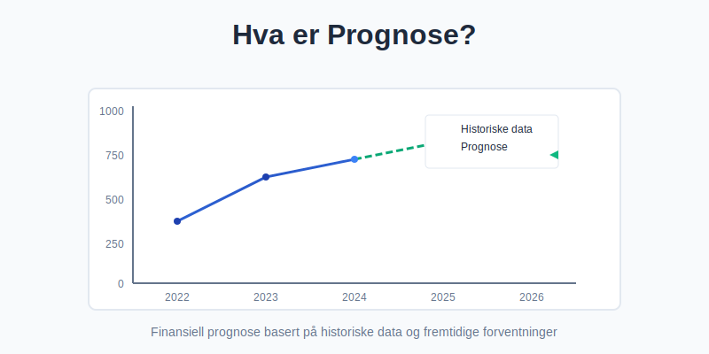
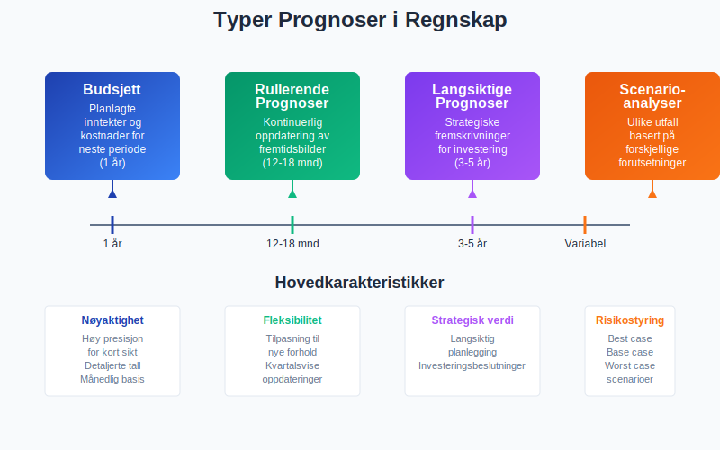
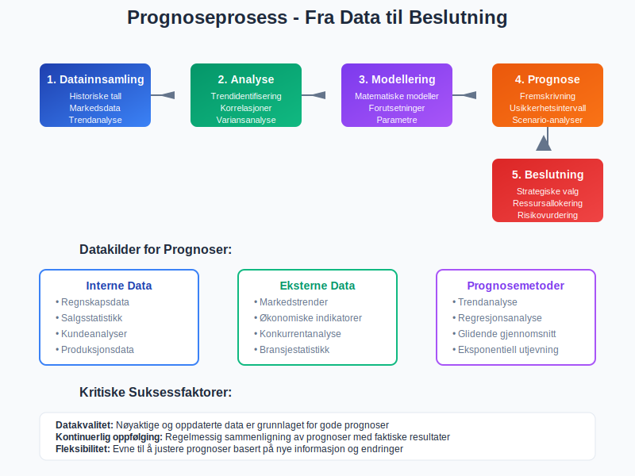
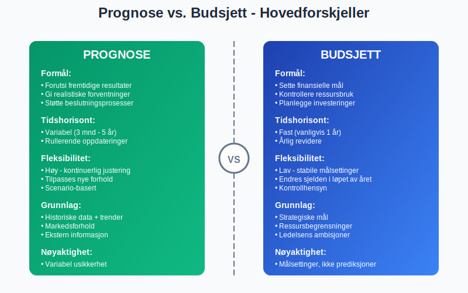
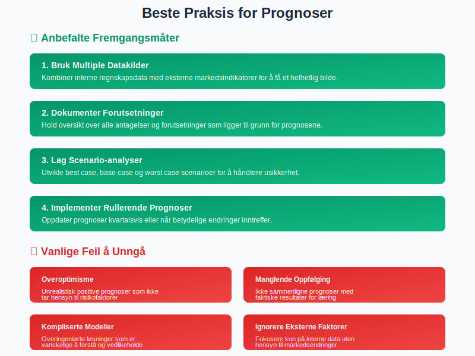

En prognose er en beregnet fremskriving av fremtidige økonomiske forhold basert på historiske data, markedstrender og forventninger. I regnskapssammenheng brukes prognoser til å forutsi inntekter, kostnader, kontantstrøm og andre finansielle nøkkeltall for å støtte strategisk planlegging og beslutningsprosesser.

Prognoser skiller seg fra budsjetter ved at de fokuserer på realistiske forventninger fremfor målsettinger, og oppdateres kontinuerlig basert på nye informasjon og endrede markedsforhold.
Typer Prognoser i Regnskap

Kortsiktige Prognoser (Budsjetter)
Kortsiktige prognoser dekker vanligvis 12 måneder og fokuserer på detaljerte månedlige eller kvartalsvise fremskrivninger av:
- Inntekter og salgsvolum
- Driftskostnader og lønnskostnader
- Kontantstrøm og likviditetsbehov
- Investeringer og finansieringsbehov
Rullerende Prognoser
Rullerende prognoser oppdateres kvartalsvis og gir et kontinuerlig 12-18 måneders fremtidsbilde. Dette gjør det mulig å:
- Justere for sesongvariasjoner
- Inkorporere nye markedsforhold
- Tilpasse seg endringer i forretningsmodellen
- Gi mer nøyaktige kortsiktige estimater
Langsiktige Prognoser
Langsiktige prognoser strekker seg over 3-5 år og brukes til:
- Strategisk planlegging og investeringsbeslutninger
- Analyse av avkastning på større investeringer
- Beregning av forventet vekst med sammensatt årlig vekstrate (CAGR)
- Finansieringsplanlegging
- Verdivurdering av selskapet
Scenario-analyser
Scenario-analyser utvikler flere mulige utfall basert på ulike forutsetninger:
| Scenario | Beskrivelse | Bruksområde |
|---|---|---|
| Best Case | Optimistisk utvikling | Identifisere potensial |
| Base Case | Mest sannsynlig utfall | Hovedplanlegging |
| Worst Case | Pessimistisk scenario | Risikostyring |
Prognoseprosess og Metodikk

1. Datainnsamling og Analyse
Grunnlaget for gode prognoser bygger på kvalitative og kvantitative data:
Interne datakilder:
- Historiske regnskapsdata og balanse
- Salgsstatistikk og kundeanalyser
- Produksjonsdata og kapasitetsutnyttelse
- Driftsregnskap og kostnadstrends
Eksterne datakilder:
- Markedstrender og bransjestatistikk
- Økonomiske indikatorer og renteutvikling
- Konkurrentanalyse og markedsandeler
- Regulatoriske endringer
2. Prognosemetoder
Ulike prognosemetoder egner seg for forskjellige situasjoner:
Kvantitative Metoder
- Trendanalyse: Fremskriving av historiske mønstre
- Regresjonsanalyse: Sammenheng mellom variabler
- Glidende gjennomsnitt: Utjevning av svingninger
- Eksponentiell utjevning: Vekting av nyere data
Kvalitative Metoder
- Ekspertvurderinger: Faglig skjønn og erfaring
- Markedsundersøkelser: Kundeintervjuer og spørreundersøkelser
- Delphi-metoden: Strukturert ekspertpanel
- Scenario-planlegging: “Hva-hvis” analyser
3. Validering og Justering
Kontinuerlig forbedring av prognoser krever:
- Sammenligning med faktiske resultater
- Analyse av avvik og årsaker
- Justering av modeller og forutsetninger
- Dokumentasjon av læringspunkter
Forskjell Mellom Prognose og Budsjett

| Aspekt | Prognose | Budsjett |
|---|---|---|
| Formål | Forutsi fremtiden | Sette mål og kontrollere |
| Fleksibilitet | Høy - kontinuerlig oppdatering | Lav - stabile målsettinger |
| Tidshorisont | Variabel (3 mnd - 5 år) | Fast (vanligvis 1 år) |
| Grunnlag | Historiske data + markedstrends | Strategiske mål + ressurser |
| Oppdatering | Kvartalsvis eller oftere | Årlig |
| Nøyaktighet | Avhenger av usikkerhet | Målsettinger, ikke prediksjoner |
Regnskapsføring av Prognoser
Prognoser påvirker regnskapsføring på flere måter:
Periodisering og Avsetninger
- Estimering av fakturaer som ikke er mottatt
- Beregning av avsetninger for garantiforpliktelser
- Periodisering av kostnader og inntekter
Nedskrivninger og Verdifall
- Vurdering av kundefordringer og tap
- Nedskrivning av varelager
- Verdifall på anleggsmidler
Pensjonsforpliktelser
Ved regnskapsføring av pensjoner brukes aktuarielle prognoser for:
- Fremtidige lønnsnivåer
- Avkastning på pensjonsmidler
- Levealder og andre demografiske faktorer
- Diskonteringsrenter
Bruk av Prognoser i Finansiell Rapportering
Årsregnskap og Noter
Prognoser må dokumenteres i årsregnskapet når de påvirker:
- Avslutningsbalanse og verdivurderinger
- Avsetninger for fremtidige forpliktelser
- Vurdering av going concern-forutsetningen
Ledelsesrapportering
Månedlig og kvartalsvis rapportering inkluderer:
- Sammenligning av prognoser med faktiske tall
- Analyse av avvik og trendutvikling
- Oppdaterte prognoser for resterende periode
- Prognose for bruttofortjeneste og lønnsomhet
Beste Praksis for Prognoser

Kvalitetssikring
- Datakvalitet: Sikre nøyaktige og oppdaterte grunnlagsdata
- Dokumentasjon: Tydelige forutsetninger og beregningsmetoder
- Validering: Regelmessig sammenligning med faktiske resultater
- Responsibilitet: Klare roller for prognoseprosessen
Kommunikasjon og Bruk
- Transparens: Åpen kommunikasjon om usikkerhet og forutsetninger
- Timing: Pravtidig levering til beslutningsprosesser
- Formatering: Tydelige rapporter tilpasset mottakere
- Oppfølging: Kontinuerlig forbedring basert på erfaringer
Teknologi og Verktøy
Moderne prognoseverktøy kan forbedre nøyaktighet og effektivitet:
- Integrerte ERP-systemer for datainnsamling
- Statistiske analyseprogrammer
- Dashboard og visualiseringsverktøy
- Automatiserte varslinger og oppdateringer
Utfordringer og Begrensninger
Usikkerhet og Risiko
Prognoser har iboende usikkerhet som må håndteres:
- Markedsvolatilitet og konjunktursvingninger
- Teknologiske endringer og disrupsjon
- Regulatoriske endringer
- Force majeure-hendelser
Menneskelige Faktorer
- Kognitiv bias: Tendenser som påvirker objektiviteten
- Organisatorisk press: Ønske om optimistiske prognoser
- Kompetanse: Behov for statistisk og analytisk kunnskap
- Ressurser: Balanse mellom presisjon og kostnad
Prognoser i Ulike Bransjer
Detaljhandel
- Sesongvariasjoner og trendprognoser
- Lageroptimereing og innkjøpsplanlegging
- Kundelojalitet og markedsandeler
Produksjon
- Råvarekostnader og leverandørforhold
- Kapasitetsutnyttelse og investeringsbehov
- Kvalitetskostnader og garantiavsetninger
Tjenesteyting
- Personalkostnader og kapasitetsstyring
- Kundetilfredshet og gjentakskjøp
- Teknologiinvesteringer og digitalisering
Prognoser er et kritisk verktøy for moderne bedriftsledelse og regnskapsføring. Ved å kombinere solid metodikk med kontinuerlig forbedring, kan organisasjoner ta bedre beslutninger og redusere finansiell risiko. Nøkkelen til suksess ligger i å balansere presisjon med praktisk anvendelighet, samtidig som man anerkjenner prognosers iboende usikkerhet.